A. La mise en place
Préparer les outils et le dossier du projet.
- Dans ton explorateur de fichiers, ouvre le dossier
Techno Branche Etuet observe son contenu.- Le dossier
Exercicecontient les fichiersindex.html,README.mdet les sous-dossierscss,images,jsetsounds. - Le dossier
Matérielcontient le visuel des six thématiques disponibles.
- Le dossier
- Ouvre le prototype : dans le dossier
Exercice, double-clique sur le fichierindex.htmlpour l'ouvrir dans un navigateur.
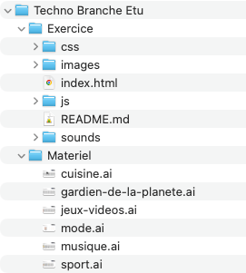
Le prototype de base du robot conversationnel s’affiche.
- Écris un message au robot dans le champ prévu à cet effet et celui-ci te répondra avec une phrase aléatoire.
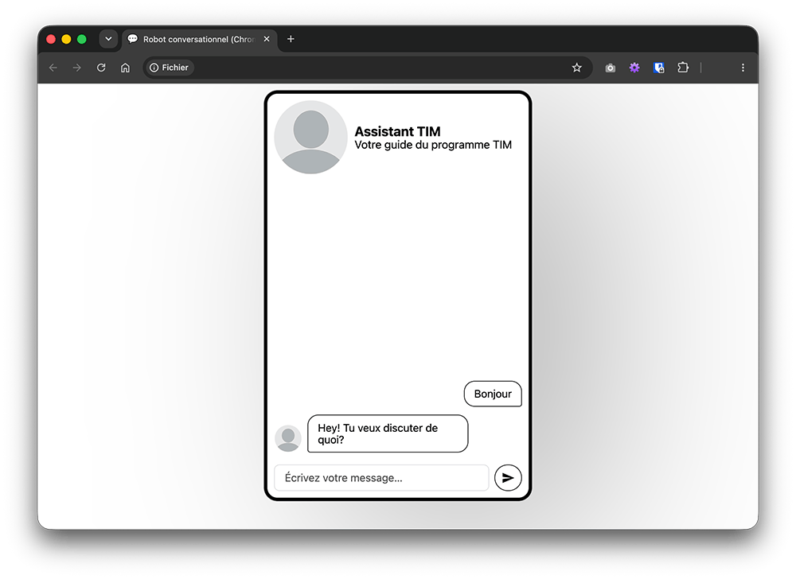
B. Illustrator
Créer l’identité visuelle de ton robot conversationnel avec Adobe Illustrator.
C'est un logiciel de création graphique vectorielle.
Toutes les illustrations que tu vas observer dans les prochaines étapes ont été conçues par une personne diplômée du programme TIM. Leur conception fait partie des compétences développées dans le programme.
Le dossier Matériel contient un fichier Illustrator pour chacune des six thématiques proposées.
Les noms de fichier se terminant par « .ai » indiquent qu'ils ont été créés avec Adobe Illustrator.
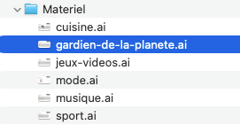
Tu peux choisir parmi les thématiques suivantes :


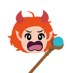
- Double-clique sur le fichier Illustrator de la thématique qui t'intéresse pour ouvrir la bibliothèque d’éléments graphiques permettant de créer l’avatar de ton robot conversationnel.
- Pour te déplacer dans le document Illustrator:
- sélectionne l'outil Main dans la barre d'outils
ou - maintiens la barre d’espace et clique-glisse.
- sélectionne l'outil Main dans la barre d'outils
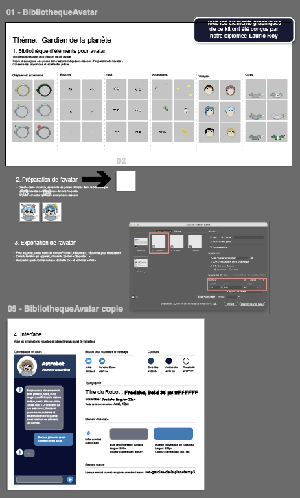
Nous allons créer un avatar qui représentera ton robot conversationnel.
- Explore les différentes pièces disponibles dans la section 1. Bibliothèque d’éléments : yeux, bouches, chapeaux, accessoires, etc.
- Déplace les pièces de ton choix dans la zone 2. Préparation de l’avatar pour assembler ton avatar.
- Superpose plusieurs éléments pour créer des effets originaux.
- Expérimente jusqu’à obtenir la combinaison qui te plaît.
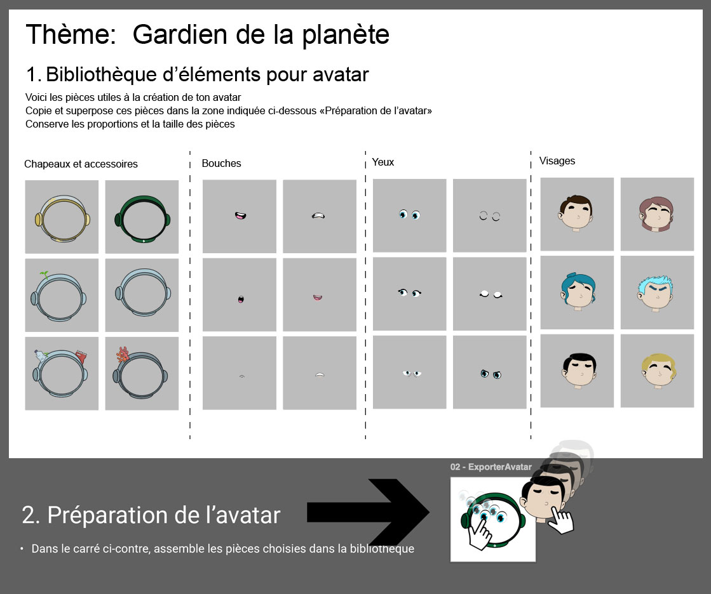
Exporter ton avatar
Une fois l’avatar construit, exporte-le :
- Va dans le menu Fichier > Exporter > Exporter pour les écrans.
- Dans la fenêtre qui apparaît, assure-toi que seul le 2e item est coché. Il s’agit du plan de travail qui contient l’avatar que tu viens d’assembler.
- Paramètre le format à Échelle 2x et PNG.
- Clique sur Exporter le plan de travail.
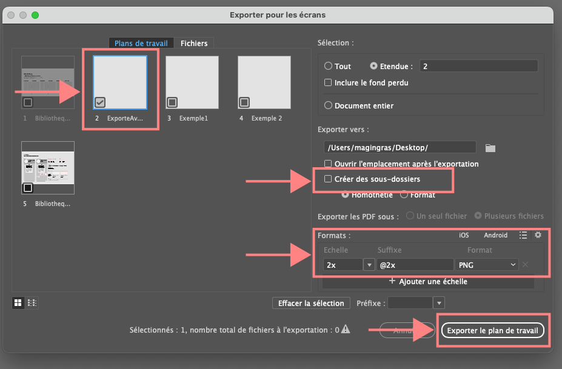
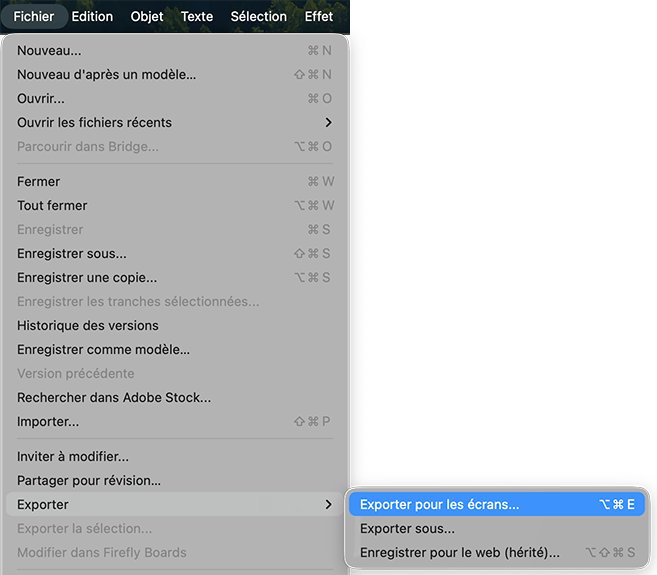
Organiser ton avatar
L’avatar a été exporté dans le dossier Matériel avec le nom par défaut ExporterAvatar@2x.png.
- Dans l’explorateur de fichiers, navigue jusqu’au dossier
Matérielet trouveExporterAvatar@2x.png. - Renomme ce fichier
mon-avatar.png(clic droit > Renommer). - Déplace-le dans le dossier
Exercice/images.
Pourquoi exporter mon avatar en format PNG ?
Le PNG est un format d’image optimisé pour le Web : il est léger, compatible avec les navigateurs et capable de conserver la transparence de l’arrière-plan. C’est idéal pour intégrer ton avatar dans une interface Web.
C. HTML
Structurer l’information.
Pourquoi utiliser un IDE (Integrated Development Environment) comme VSC plutôt que le bon vieux Notepad ?
L’architecture d’un site Web peut être complexe. Un IDE permet de naviguer plus rapidement entre les fichiers du projet, d’utiliser des extensions et de profiter d’outils qui facilitent la programmation.
Dans cette section, tu vas intégrer ton avatar dans le robot conversationnel.
- Ouvre Visual Studio Code (VSC).
- Va dans Fichier > Ouvrir le dossier….
- Sélectionne le dossier
Exercice. - Clique sur Sélectionner un dossier.
- Clique sur Oui, je fais confiance aux auteurs (Yes I trust the authors).
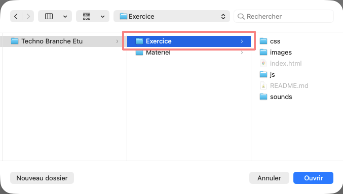

Retourne rapidement dans ton navigateur pour observer l’entête du robot conversationnel : nous allons y personnaliser l’avatar, le titre et le sous-titre.
Dans VSC, ouvre le fichier index.html à partir de l’explorateur. C’est dans ce fichier que se trouvent les éléments HTML qui s’affichent sur le site Web : texte, structure, images, etc.
Enregistre régulièrement ton travail dans VSC avec Ctrl+S, puis clique sur le bouton Rafraîchir dans ton navigateur pour voir le résultat.
Dans le code HTML, remarque les différentes balises utilisées pour structurer l’information : <h1>, <h2>, <img>, etc. Chaque balise a une signification différente.
Personnaliser le nom et le sous-titre
- Repère les balises
<h1>et<h2>situées dans l’entête. Elles contiennent respectivement le nom et le sous-titre actuels du robot. - Remplace le texte entre
<h1>et</h1>par le nom que tu as choisi pour ton robot. Sois créatif. - Remplace le texte entre
<h2>et</h2>par ton propre sous-titre. - Enregistre tes modifications, puis rafraîchis la page dans ton navigateur.
Le nouveau nom et le nouveau sous-titre de ton robot conversationnel devraient apparaître dans l’entête.
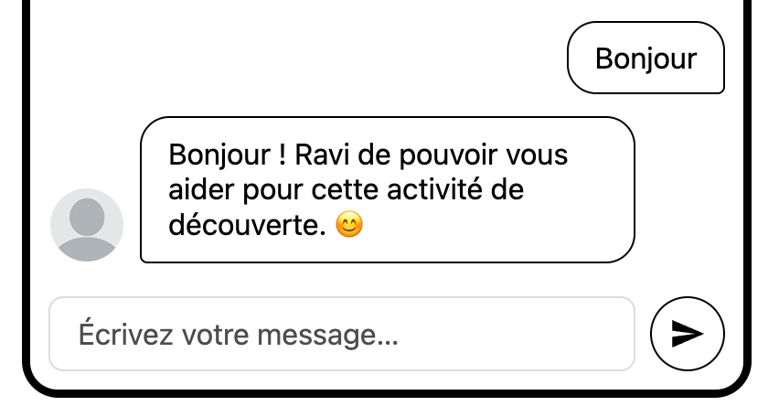
Le langage HTML
Le HTML ne possède aucune capacité de programmation. Son rôle est de structurer l’information : titres, paragraphes, images, boutons, etc.
Cette structure est ensuite stylisée grâce au CSS, puis animée et rendue interactive grâce au JavaScript. Ces trois technologies sont indispensables pour créer un site moderne.
Repère la balise <img> qui affiche l’avatar. Elle contient un attribut src (source) qui indique le chemin du fichier image à afficher.
- Modifie le chemin pour qu’il pointe vers l’avatar que tu as créé précédemment :
mon-avatar.png. - Enregistre la modification et rafraîchis la page dans ton navigateur.
Ton avatar devrait maintenant apparaître dans le robot conversationnel.
En quoi le texte alternatif est-il utile si je ne le vois jamais ?
Il est indispensable pour rendre Internet accessible à tous. Une personne ayant un trouble de la vue peut utiliser un lecteur d’écran pour naviguer sur le Web. Quand le lecteur rencontre une image, il se fie au texte alternatif pour la décrire à voix haute. Ainsi, la personne sait ce que représente l’image.
As-tu remarqué le deuxième attribut de la balise <img> : alt ? Il s’agit d’un texte alternatif qui décrit l’image pour les personnes qui utilisent un lecteur d’écran, ou lorsque l’image ne peut pas s’afficher.
- Repère l’attribut
altdans la balise<img>de ton avatar. - Modifie le texte pour qu’il décrive fidèlement ton image. Par exemple :
Avatar d’un astronaute avec des lunettes soleil. - Enregistre ta modification, puis rafraîchis la page dans ton navigateur.
D. CSS
Styliser la page.
Pour les prochaines étapes, réfère-toi à la section 4. Interface du fichier Illustrator de ta thématique. Cette section contient les informations visuelles et interactives de l’interface :
- les couleurs du bouton pour soumettre le message;
- les couleurs générales et celles des bulles de conversation;
- la typographie du titre et du sous-titre;
- un aperçu visuel du résultat attendu;
- le son à émettre lors de la réception d’une réponse.
Chaque couleur est identifiée par un code hexadécimal qui débute par #. Par exemple, #000000 correspond au noir et #FFFFFF au blanc.


Ajuster les couleurs
- Dans VSC, ouvre le fichier
css/style.cssà partir de l’explorateur. - Repère le conteneur
:root. Des règles de style sont déjà prévues pour accueillir les couleurs de ta thématique. - En te fiant au fichier Illustrator, copie-colle les codes hexadécimaux aux bons endroits.
- Enregistre la modification et rafraîchis la page dans ton navigateur.
Les couleurs de ton robot devraient maintenant ressembler à l’exemple présenté dans Illustrator.
Chaque code hexadécimal doit commencer par
# (exemple : #FF5733) et chaque ligne de code doit se terminer par un point-virgule ;.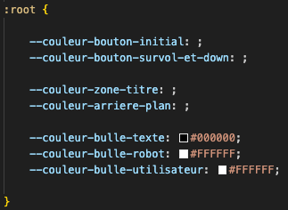
Le robot utilise actuellement Arial. Nous allons la remplacer par la police prévue pour ta thématique. Dans l’exemple présenté dans l’activité, il s’agit de Fredoka.
Identifier la police
- Consulte la section 4. Interface du fichier Illustrator.
- Repère la police indiquée pour le titre et le sous-titre.
Obtenir le code de la police
- Ouvre Google Fonts dans ton navigateur et recherche la police indiquée dans ton kit.
- Sélectionne la police.
- Clique sur Get font, puis sur Get embed code.
- Dans l’onglet Web, sélectionne @import.

Intégrer la police
- Copie seulement la ligne
@importet colle-la tout en haut du fichierstyle.cssdans VSC. - Copie seulement la ligne
font-familyet remplace la ligne correspondante dans le fichier CSS. - Enregistre la modification et rafraîchis la page dans ton navigateur.
La police du titre et du sous-titre devrait maintenant correspondre à celle présentée dans Illustrator.

La bulle de discussion est présentement accompagnée d’un mini-avatar générique.
La section 4. Interface du kit Illustrator prévoit une icône du robot selon ta thématique. Les icônes sont déjà disponibles dans /images/mini-avatar.
- Ouvre le fichier
css/style.cssdans VSC. - Repère la règle qui définit l’image de fond du mini-avatar.
- Remplace le nom du fichier par celui de l’icône correspondant à ta thématique.
- Enregistre ta modification, puis rafraîchis la page dans ton navigateur.
Le mini-avatar devrait maintenant apparaître à côté des réponses du robot conversationnel, dans les bulles de discussion.

E. JavaScript
Ajouter l’interactivité.
Le JavaScript rend la page Web interactive. Ici, tout est déjà programmé : il suffit d’activer le son.
- Ouvre le fichier
js/script.jsdans VSC. - Repère la ligne qui est actuellement mise en commentaire, précédée de
//. - Retire les deux barres obliques
//au début de la ligne pour activer le code. - Modifie le nom du fichier pour qu’il pointe vers le son correspondant à ta thématique, déjà prêt dans le dossier
/sounds/. - Enregistre ta modification, puis rafraîchis la page dans ton navigateur.
Un son devrait maintenant se faire entendre chaque fois que le robot conversationnel commence à répondre à ton message.
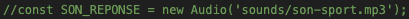
Chaque fois que tu écris un message, le robot choisit une réponse au hasard dans une liste enregistrée dans le fichier script.js.
- Repère la liste qui commence par
const phrases = [. - Remplace les phrases entre guillemets par tes propres réponses.
- Tu peux modifier toutes les phrases ou seulement celles que tu souhaites personnaliser.
" " et les virgules entre les phrases.- Enregistre ta modification, puis rafraîchis la page dans ton navigateur.
Le robot devrait maintenant répondre avec les phrases que tu as écrites.

Activité complétée
Pense à sauvegarder tes fichiers.
Tu peux copier le tout sur une clé USB, l’envoyer sur ton compte Google Drive pour conserver ton projet ou le publier dans notre Padlet collaboratif.